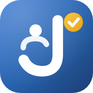

Abriendo tu base de datos en Drive…
Instala el CRM como aplicación para abrirlo siempre con tu base de datos de Drive.
Cambiar enlace del CRMPega una sola vez el enlace de tu CRM (el que termina en /exec). Después esta app abrirá siempre tu base de datos en Drive.
Sin conexión a internet. El CRM necesita conexión para leer la base de datos de Drive.